キルギス旅行 2025年夏
2025/07/26 (土) ~ 2025/08/07 (木)の13日間でキルギス共和国を観光してきました。 旅程や訪れた町の様子、物価や治安などについて紹介します。 旅程については作成したしおりをご覧ください。4in1形式で両面印刷するといい感じのポケットサイズにまとまります。
1日目
日本からキルギスまでの直行便はないので、韓国で乗り継ぎます。往復の航空券代は10万円ほどでした。 tway航空のサイトで買いました。韓国での乗り継ぎ待ち含めて片道12時間です。 キルギスのマナス空港には23時15分に到着し、なぜか他にもいた日本人をちらちら見ながら入国審査を受けます。 ホテルに頼んでおいたタクシーのあんちゃんを待ち、そのまま市内へ移動しました。支払いはホテルの宿泊代と合わせて支払います。 1400ソムほどでした。マルシュなら40ソムらしいです。深夜にタクシーなので妥当な値段だと思います。 部屋のシャワーが見事にぶっ壊れたのは驚きましたが、疲れていたのでそのまま寝ました。 ホテルはbridges hotelに泊まりました。
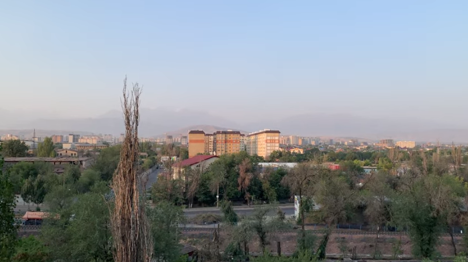
ホテル屋上からの眺め。控えめに言って最高。
2日目
ビシュケク市内を観光しました。SIMカードの入手のためまずはオシュバザールに行きます。近場のカフェで一休みして本日の宿であるさくらゲストハウスに移動します。 荷物を置いてまた観光に出かけます。舗装されていない道を歩いて泥まみれの靴で入ったレストランの床を汚しちゃったのでめちゃくちゃ謝りました。かなり美味しかったのでせめてここで紹介します。 さくらゲストハウスはその名の通り日本人観光客がよく集まるそうで、事実4人ほどいました。夜は楽しくお話しました。ぶどうをご馳走になりました。美味しかったなあ。
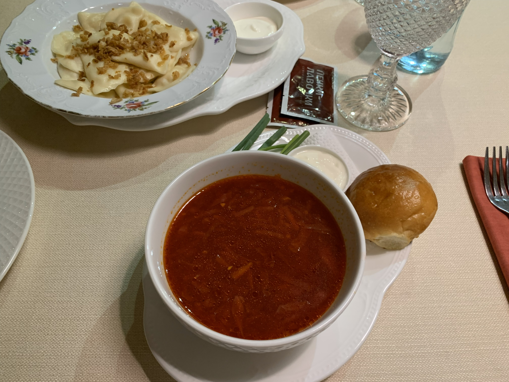
店員のお姉さんには申し訳ないことをした...
3日目
移動日で、さくらゲストハウスで出会った二人と一緒にコチコルへ移動します。マルシュ乗り場に移動していい感じの値段のとこに頼みます。 ここでボラれると聞いていたので何人かに声を掛けてみると案の定ふっかける人がいて怖かった。ゲストハウスで出会った方がいい感じの人を見つけてくれました。感謝！ カラコルには15時くらいに到着、皆で遅めの昼飯をとりそのまま宿へ。荷物を置いて北東にある沼へ釣りに行きます。 残念ながら風が強く延べ竿で狙うことは出来ませんでしたが、現地の方が実際に釣りされていました。夜は男3人で近所のサウナへ行きました。地元のおじさんが葉っぱでしばいてくれて楽しかったです。 urban monkey tent hostelさんはアルティンアラシャンに向かう時に荷物も預かってくださり助かりました。
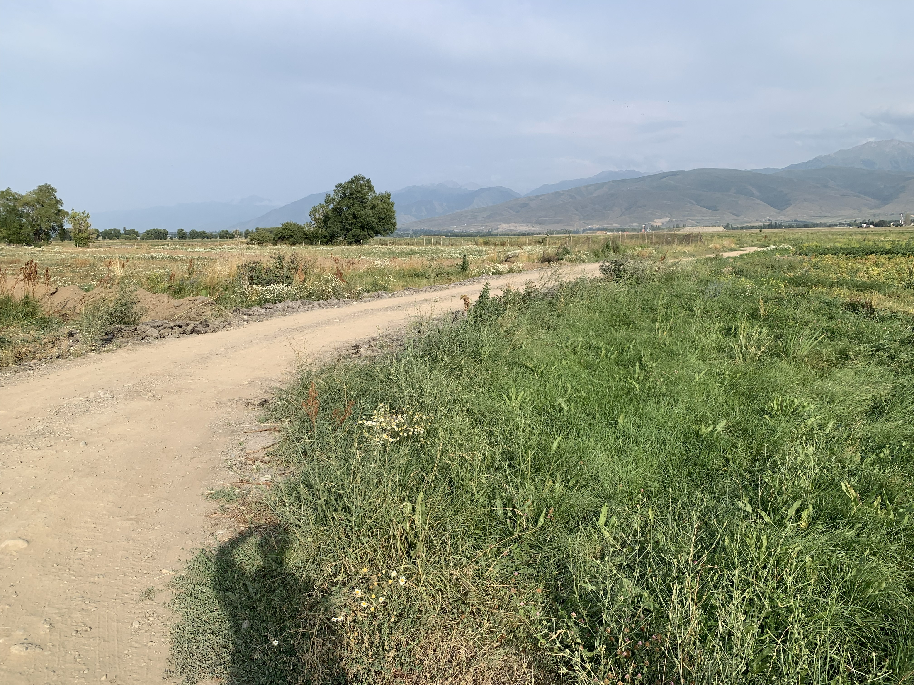
門の手前までタクシーで行ってもらい、そこから南側の道を進むと岸に出ます。
4日目
朝一でアルティンアラシャンに向かいます。結果として、昼に近付くにつれて気温が高くなったので朝の涼しい時間帯に大分進むことが出来たので正解でした。 道中は絶景だらけなのでカメラが忙しかった...guest house elzaさんは一番奥にあるので最後の丘に登ってからの徒歩がなかなかつらかったです。 時折車に追い越されたりしましたが、たまにタダで乗せていってくれる人もいます。ただ、いい景色がもったいないので是非歩くことを勧めます。飽きたらタダ乗りしましょう。 登山口まではマルシュがありますが、どうしても朝一で行きたかったのでタクシーで行きました。6時にも関わらず来てくれて感謝。
<
こんなんがずっと。ただ日差し強いので帽子は必携！
5日目
8時にアラコル湖へ出発。朝飯を同席した韓国の方が言うにはマジで急げ、とのことだったので足早に出発。曇り空で少し寒かったので鼻水を垂れ流しながら4時間ほど歩いて昼頃に無事登頂。 帰りは軽い高山病にかかって登山道で寝転がっていたら見知らぬ韓国の方々に心配されて起きたら囲まれていた。帰りに韓国に寄るよ、ポーシンタン (犬鍋)食べるよ、と言うと盛り上がった。 帰りは強い雨となり凍えながら宿に戻った。下山は馬に頼った。このあたりから口唇ヘルペスが顔を覗かせていた。やはり行きも帰りも馬を使うべきだった。 私のように口唇ヘルペス持ちはぜひ馬を使うことを勧める。あとティンホイッスルという楽器を持ち込んで頂上の手前で演奏 (笑)したらスペイン人のお姉さんがお菓子をくれた。一芸持っていてよかった。 当初アラコル湖の岸までおりてみたいと思っていたが、無理すぎた。富士山より高い場所にいるんだって。温泉があって本当にうれしかった。夜は星空がすごかったがかなり寒いしあちこちにうんちが転がっているので注意。
ユルタ泊もできるがやはりベットが大好き
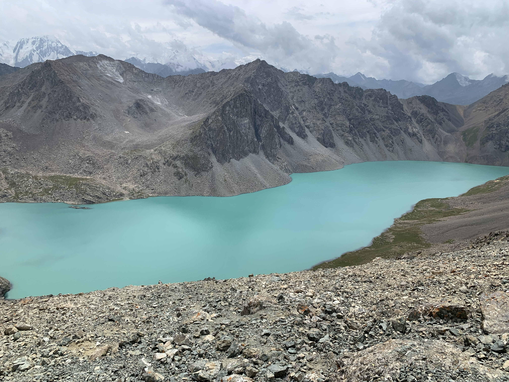
昼食を頼めばホテルの人が作ってくれる
6日目
帰りは大雨に見舞われた。韓国の方と車を使うことにした。そこそこ掛かったが雨が強すぎたので仕方ない。この日は移動日でカラコルからバルイクチ、そこからコチコルへ必死の移動。 コチコルで翌日のソンクル湖ツアーを予約しに向かうと案の定ふっかけられる。CBTと書かれている店が複数あるが、交差点に近い方のおばちゃんが運営している方がかなり安いので注意。 なぜかそこに行くとJAICAの駐在員としてコチコルで体育の先生をしているというお姉さんがいて、美味しいお店だったり予約していたホテルの場所までの案内をしてくれたり、大変お世話になった。 ソンクル湖は度を超えて寒いらしく余っている防寒具を貸してくれたが、これに本当に命を救われた。申し訳ないことに命を救われた衝撃で名前を忘れかけている。星さん、だった気がするがもしまた会うことになればお礼したい。 女性がお茶を継ぐ文化が生き残っているらしくて継いでくれたりしたが、これ以上なく申し訳ないので全力で継ぎ返した。 この日利用した宿はbooking.comで予約しものだが、初めての客が我々だったようだ。 ツアーに行っている間、洗濯物を干す必要があったので実際に宿泊はしないが余計に1泊分利用させてくれ、とお願いするとまさかの干していた洗濯物を畳んでおいてくれた。 代金を支払おうとすると、いくらだったっけ？と聞き返してくるので少し多めに渡した。
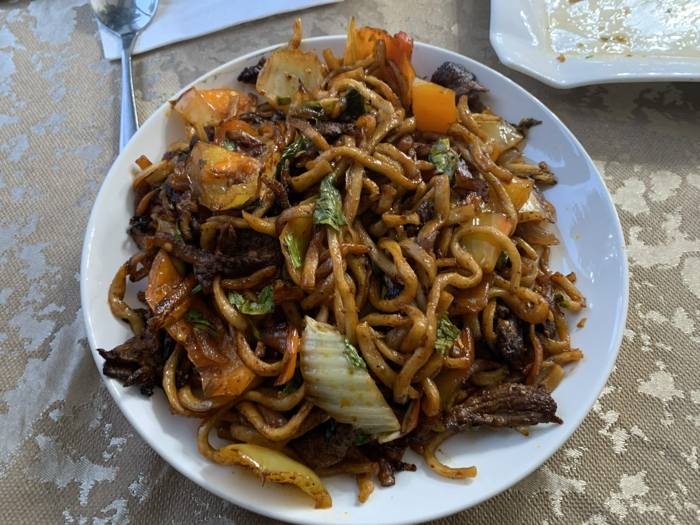
焼うどん的な何か。美味しいがどれも脂っこい。最高。
7日目
ソンクル湖ツアーへ出発前にコチコルの川に釣りに向かった。前日に上流が雨だったので魚の気配は無かった。 星さんに聞くと生徒がたまに釣りしているとのことだったので魚がいないことはないらしいが、一緒した現地の釣り人も坊主で早々に竿じまいしていた。 朝から道端でウォッカを飲むおじさんがいて朝飯を集られたが走って逃げた。ほっぺにちゅーされたのはいい思い出。 ソンクル湖までの道のりもまた異常な絶景。風は冷たかった。湖畔で生活している子供がロバをいじめていて面白かった。やめたげて。 口唇ヘルペスは最高潮。地獄だった。トマトをかじると更に腫れるし、つらかった。 湖畔の景色は最高すぎ。
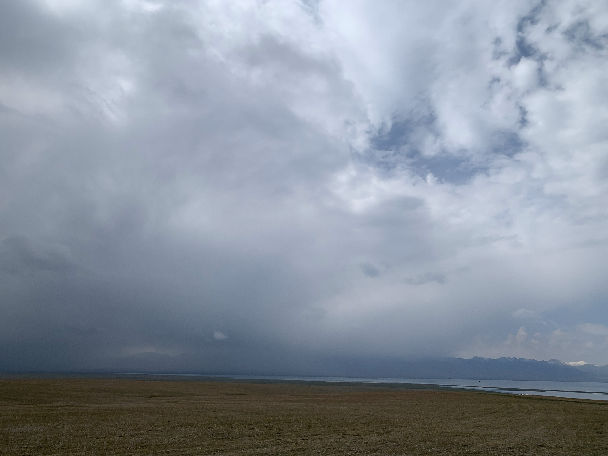
風が抜けるので雲が来てもすぐに晴れる。
8日目
寒すぎるので9時出発のところ8時にしてもらってコチコルへ帰還。 薬局でヘルペスの塗薬を購入。異国で薬買うの怖すぎたけどGoogle翻訳でなんとかなった。本当に良かった。 星さんに防寒具を返し全力のお礼。 しかも岩塩の採掘場も案内してもらえた。なにからなにまで良くしてもらって泣けてきた。昼前に分かれ、バルイクチへ移動、イシククル湖畔で釣り場を見つけたがやはりここも述べ竿では無理。 神戸大のHPC講習関連で書類提出を求められスマホ一つでexcelファイルを編集しメールする初めての経験をした。あと明日ビシュケクへ戻る鉄道を予約した。 この鉄道は夏季の遊泳可能な期間にのみ運営される鉄道らしい。事前に席を予約購入しておいた。人気らしいが全日でもきちんと購入できた。
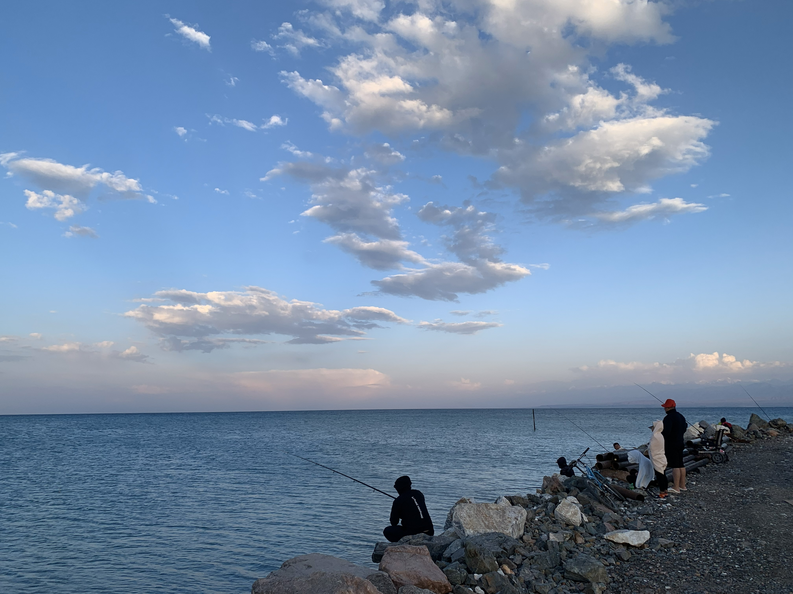
イシククル湖は釣りOKな場所とそうでない場所があるので事前に調べるべき
9日目
鉄道は夕方なのでそれまではバルイクチ観光。桟橋があったので釣りをしてみた。小魚が何匹がいたが針が合わなかったのか釣果は0。近くを歩いていた地元のおじさんらが集まってきて楽しかった。 カシューナッツなどをおやつに購入。それで意味わからない映画を観た。かなり安かったがつまらなすぎた。言葉分からないし当然かも。でも部屋に俺一人だけだったので特別感は楽しかった。 鉄道では足が臭いと下のあんちゃんに睨まれたが謝って汗拭きシートを靴下の中に押し込んでなんとかなった。5時間くらいだっただろうか、寝台列車の二階部分で寝転がりながら麻雀の何切るを敢行した。 夜はハイアットに泊まった。贅沢だ。
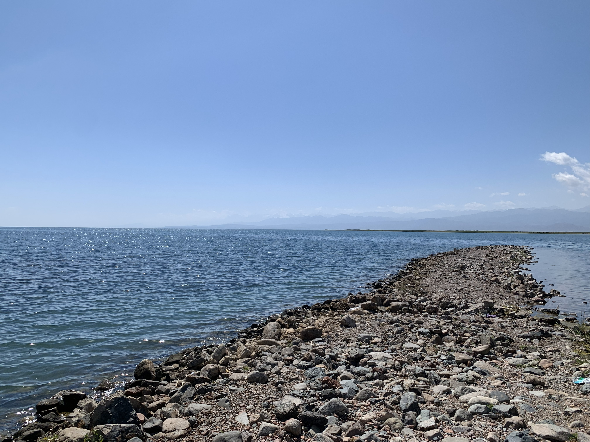
目視できたがやはりここでも釣果は0...
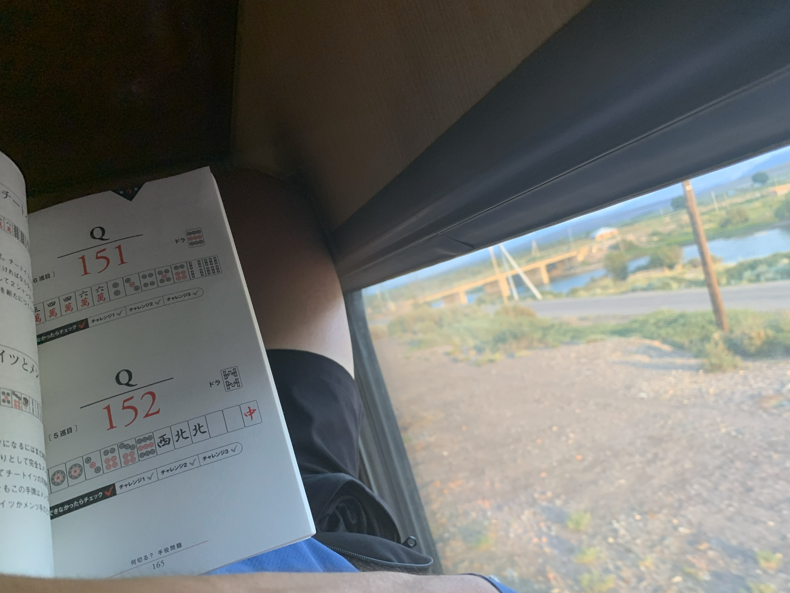
リュックを枕にした
10日目
この日は予備日としてビシュケク観光を行った。日本人の方が運営している日本食レストランに入った。 まさかの山田さんご本人が登場して飴を貰った。喉がやられていたので助かった。そばはなぜか甘かった。 現存する世界で二つのレーニン像の片方を見ることができた。市内の映画館にはキリトとアスナがいた。サウナは楽しかった。水風呂が3mくらいの深さだった。
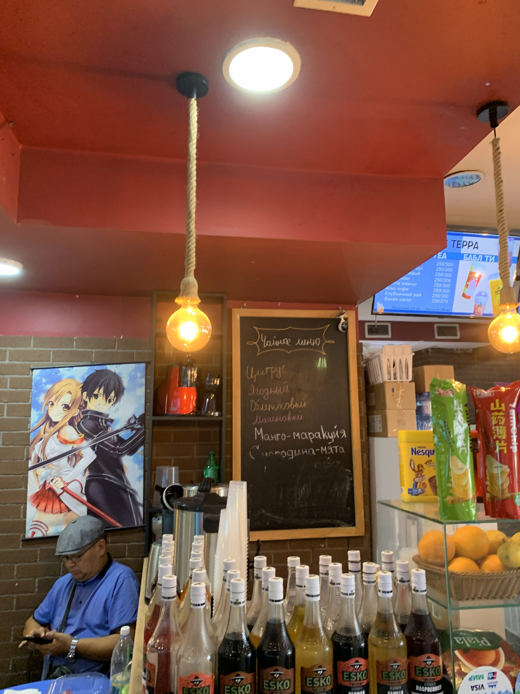
映画館になぜかいたキリトくん
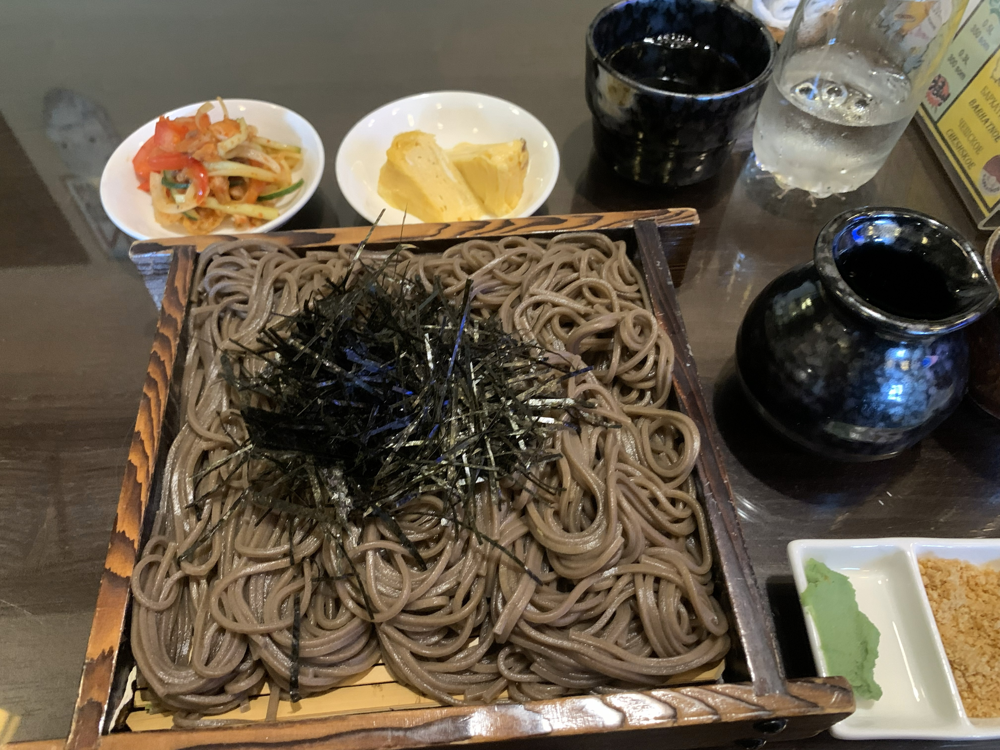
そばではなく色付けされた小麦麺だった
11日目
この日は夜にキルギスを発つので、午前はビシュケク観光。アラアルチャ国立公園に行って軽いハイキングを行った。ここも鬼の景色で最高だった。 入園料があるので注意したい。人気が無さ過ぎて建物の横を素通りしかけたら整備の人に中でお金払って、と注意された。申し訳ない。 ここでも韓国の方と出会い、写真を撮ってあげた。犬鍋を食べると言うとここでもウケた。鉱石博物館に日本の石があると知ったので向かうが残念ながら開いていなかった。 yandexのあんちゃんとキルギス最高だったぜ、と会話しながら空港へ向かい、そのまま出国。
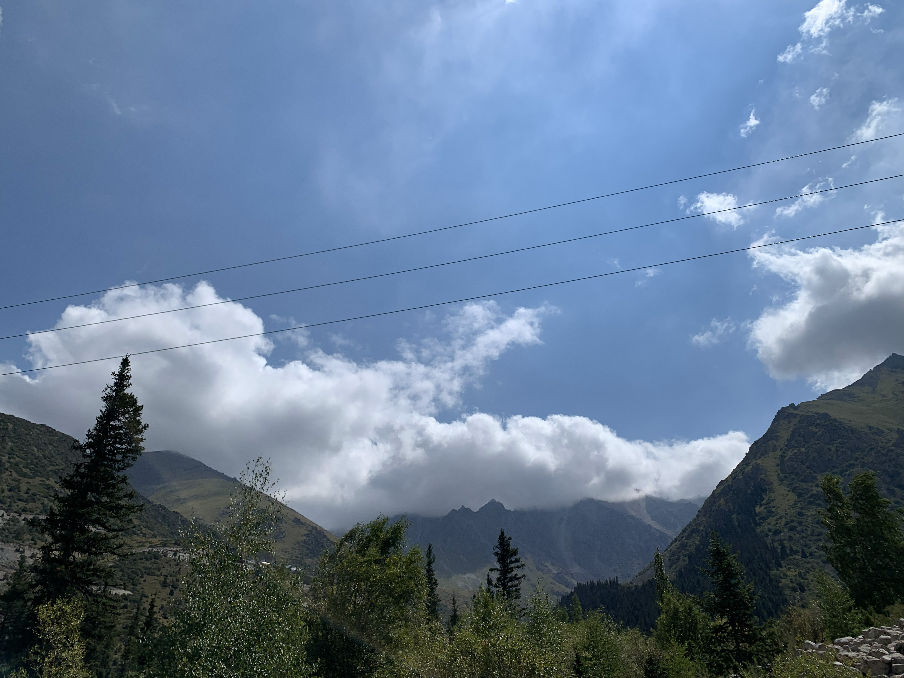
数十分ハイキングしてこれ。最高。
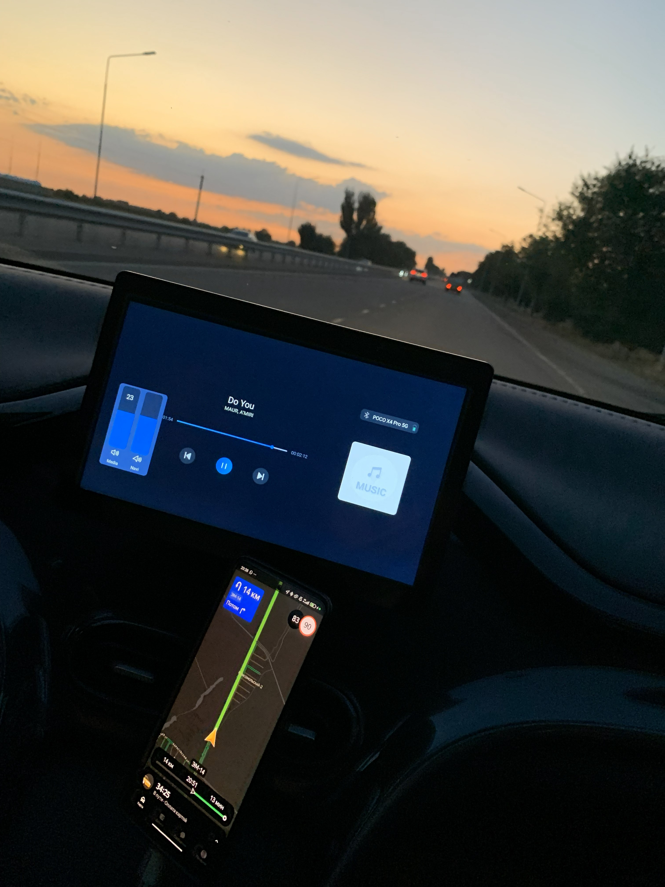
空港へ向かうタクシー
12日目
韓国を観光。犬鍋は美味しかったが、冷麺があり得ないほど美味しかった。なにあれ。あり得ない。 空港の中で一泊。
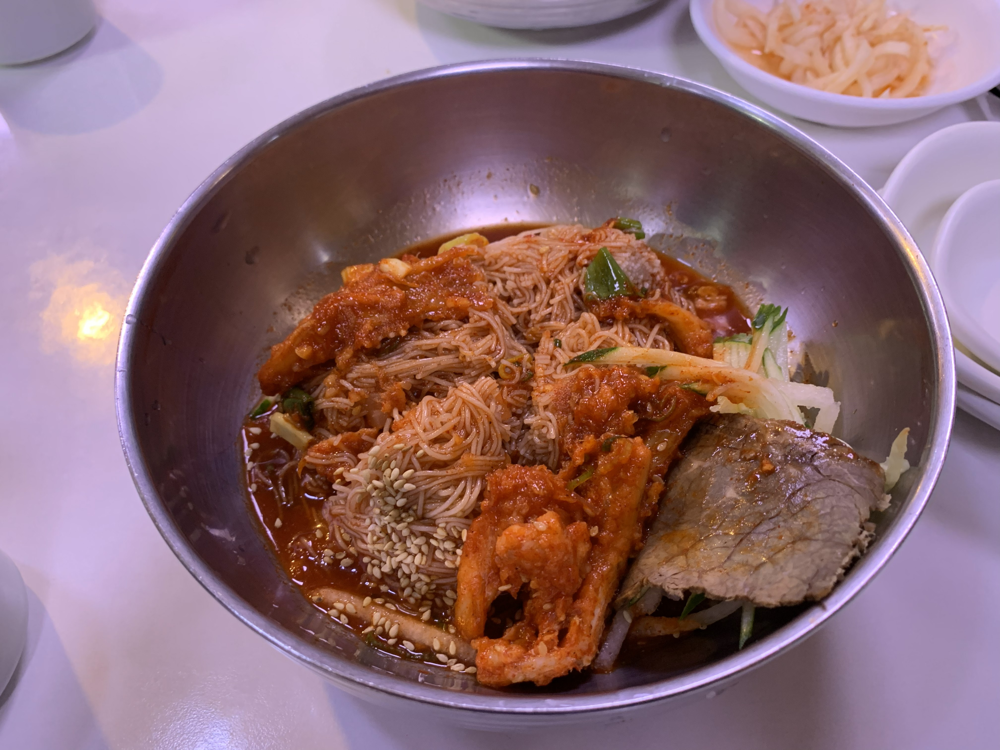
最高。
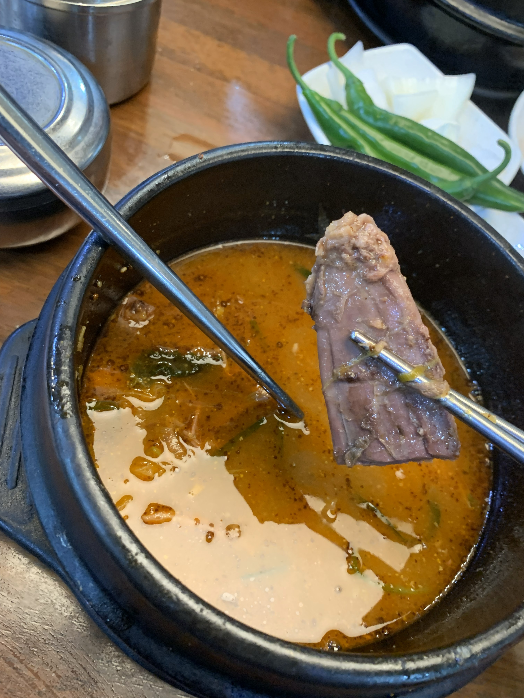
付け合わせの唐辛子を食べてみたら泣いた
13日目
朝一で成田空港へ出発。そのまま会津へ帰宅。
動画まとめ